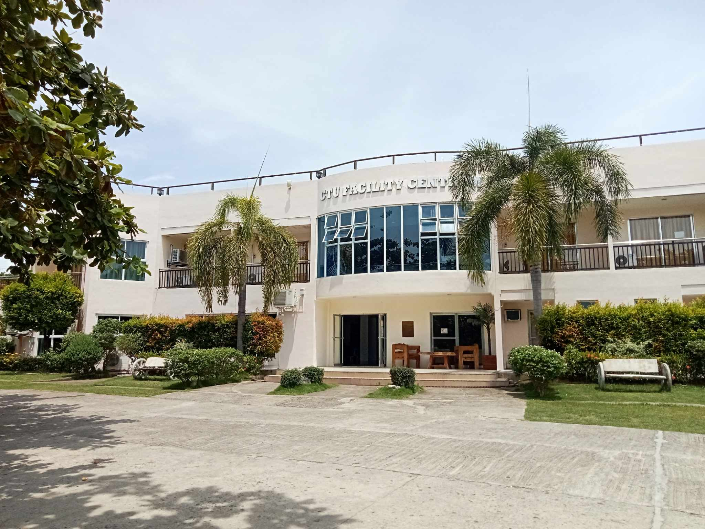

Published on: October 7, 2024
The Centrum at Cebu Technological University Danao Campus serves as a central venue for large gatherings, events, and academic activities. Designed to accommodate a variety of functions, it hosts seminars, workshops, conferences, and cultural events, playing a vital role in the academic and social life of the campus.
Equipped with modern facilities, the Centrum provides an ideal space for students and faculty to engage in collaborative learning, presentations, and university-wide programs. Its strategic location and versatile design make it a key area for fostering both academic excellence and community interaction at CTU Danao.
Back to Articles